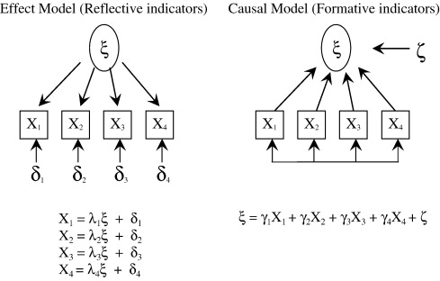

23 Formative vs. Reflective Measurements
| Reflective | Formative | |
|---|---|---|
| Root | Common factor model | Principal Component Analysis (Weighted Linear Composites) |
| Direction | Construct as causes of measures | Measures as causes of construct |
| Dimensionality |
Interchangeable Measures = reflection of construct in its entirety (Unidimensionality of reflective measures) Useful redundancy |
Multidimensionality of formative measures (this is a liability because it is analogous to multibarralled items) because the variance of the latent variable is determined by the paths (i.e., strength) from the measures, and variances and covariances of the measures. |
| Interchangeability |
Measures are interchangeable Dropping one measure should not change the construct |
Measures can’t be interchanged Missing one formative measure can change the meaning of the construct |
| Internal Consistency | Reflective measures should correlate positively |
No needs for the formative measures to correlate Correlation among measures can be problem (multicollinearity). Higher the correlation (among measures), more unstable the loadings on construct, larger standard errors. The lack of internal consistency does not provide evidence for a set of measures to be formative. |
| Identification |
identified only when either
|
are not identified, unless 2 additional reflective measures are added to be caused by the construct- multiple indicator multiple cause (MIMIC) model. Hence, the choice of reflective measures for identification concern can change the loadings relating the measures to its latent variable, which in turn, change the construct itself. Hence, specifying the reflective measures in MIMIC model is monumental |
| Measurement Error | independent measurement errors | No measurement error (i.e., error-free indicators) |
| Construct Validity | construct validity is manifested by the the magnitudes of the loadings relating the measures to the construct, which determined by the covariances among measures (e.g., the higher covariances the stronger correspondence) |
Drawbacks:
|
| Causality |
construct to measures construct = latent variable From a realist perspective, construct = real entity (i.e., could influence) (e.g., psychological state), measures = scores |
measures to construct construct = composite variable From an operationalist or instrumentalist perspective, formative measures define the construct (i.e., composite score) I’d suggest to think of formative constructs as processes Under constructivist perspective, constructs can be ascribed theoretical meaning, but would only be a conceptual entity But the causal thinking is inappropriate (because measures and construct are not 2 distinct entities), they are part-whole correspondence |

depiction by Coltman et al. (2008)
According to (Edwards 2010),
\[ x_i = \lambda_i \xi + \delta_i \]
where
\(x_i\) = reflective measure
\(\xi\) = construct
\(\lambda_i\) = effect of \(\xi\) on \(x_i\)
\(\delta_i\) = uniqueness of the measure (error)
\[ \eta = \gamma_i x_i + \zeta \]
where
\(\eta\) = construct
\(\gamma_i\) = effect of \(x_i\) on \(\eta\)
\(\zeta\) = residual (unexplained part of \(\eta\))
In case that \(\eta\) is a perfect weighted linear combination of \(x_i\), then
\[ \eta = \gamma_i x_i \]
23.1 Alternative to formative model
-
Model with first-order constructs instead of measures, and each with single reflective measures
- can’t estimate the loadings and unique variances of the reflective measures
-
Model with first-order constructs instead of measure, but each with three reflective measures, and second-order construct also has two reflective measures.
- sometimes, first-order construct can’t be measured multiple times (e.g., income, age)
Validity
Validity should be be established in the following order:
Construct Validity (also known as face validity, or concept validity): requires concepts and theory is strong
Convergent Validity: (e.g., AVE statistics >.5)
Discriminant/Divergent Validity:
Nomological Validity: (might also involve moderation).
Known Group Validity
Reliability
Test-retest reliability
Internal consistency reliability: standardized Cronbach \(\alpha\) (> 0.7 if well establish, and .6 if newly developed)
Composite construct reliability
Seminar paper in marketing
-
J.-Benedict E. M. Steenkamp and Baumgartner (1998)
- Propose method to assess measurement invariance in cross-national consumer research
23.2 Partial Least Squared
The difference between PLS and Principal Components Regression is that Principal Components Regression focuses on variance while reducing dimensionality. PLS focuses on covariance while reducing dimensionality.
Partial Least Squared- Structural Equation Modeling vs. Covariance-based Structural Modeling
PLS-SEM vs. CB-SEM
| CB-SEM | PLS-SEM | |
|---|---|---|
| Base Model | Common Factor Model | Composite Factor Model |
McIntosh, Edwards, and Antonakis (2014)
Reflections on Partial least Squares Path Modeling (PLS-PM)
-
There is still a debate to whether
PLS-PM is a SEM method
PLS-PM can reduce the impact of measurement error: yes (increase reliability)
PLS-PM can validate measurement models
PLS-PM provides valid inference on path coefficients
PLS-PM is better than SEM at handling small sample sizes
PLS-PM can be used for exploratory modeling
-
Model fit can be based on
global chi-square fit statistic
local chi-square fit statistic
explained variance